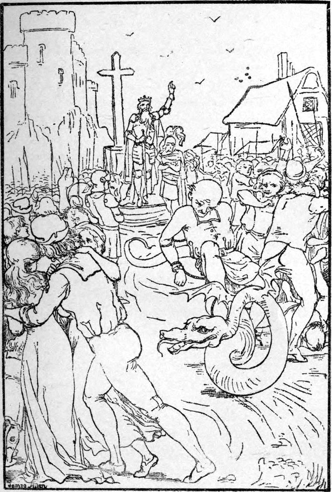

The king and his army returned, bringing with them one prisoner only, the lord chancellor. Curdie had dragged him from under a fallen tent, not by the hand of a man, but by the foot of a mule.
When they entered the city, it was still as the grave. The citizens had fled home. 'We must submit,' they cried, 'or the king and his demons will destroy us.' The king rode through the streets in silence, ill-pleased with his people. But he stopped his horse in the midst of the market place, and called, in a voice loud and clear as the cry of a silver trumpet, 'Go and find your own. Bury your dead, and bring home your wounded.' Then he turned him gloomily to the palace.
Just as they reached the gates, Peter, who, as they went, had been telling his tale to Curdie, ended it with the words:
'And so there I was, in the nick of time to save the two princesses!'
'The two princesses, Father! The one on the great red horse was the housemaid,' said Curdie, and ran to open the gates for the king.
They found Derba returned before them, and already busy preparing them food. The king put up his charger with his own hands, rubbed him down, and fed him.
When they had washed, and eaten and drunk, he called the colonel, and told Curdie and the page to bring out the traitors and the beasts, and attend him to the market place.
By this time the people were crowding back into the city, bearing their dead and wounded. And there was lamentation in Gwyntystorm, for no one could comfort himself, and no one had any to comfort him. The nation was victorious, but the people were conquered.
The king stood in the centre of the market place, upon the steps of the ancient cross. He had laid aside his helmet and put on his crown, but he stood all armed beside, with his sword in his hand. He called the people to him, and, for all the terror of the beasts, they dared not disobey him. Those, even, who were carrying their wounded laid them down, and drew near trembling.
Then the king said to Curdie and the page:
'Set the evil men before me.'
He looked upon them for a moment in mingled anger and pity, then turned to the people and said:
'Behold your trust! Ye slaves, behold your leaders! I would have freed you, but ye would not be free. Now shall ye be ruled with a rod of iron, that ye may learn what freedom is, and love it and seek it. These wretches I will send where they shall mislead you no longer.'
He made a sign to Curdie, who immediately brought up the legserpent. To the body of the animal they bound the lord chamberlain, speechless with horror. The butler began to shriek and pray, but they bound him on the back of Clubhead. One after another, upon the largest of the creatures they bound the whole seven, each through the unveiling terror looking the villain he was. Then said the king:

'I thank you, my good beasts; and I hope to visit you ere long. Take these evil men with you, and go to your place.'
Like a whirlwind they were in the crowd, scattering it like dust. Like hounds they rushed from the city, their burdens howling and raving.
What became of them I have never heard.
Then the king turned once more to the people and said, 'Go to your houses'; nor vouchsafed them another word. They crept home like chidden hounds.
The king returned to the palace. He made the colonel a duke, and the page a knight, and Peter he appointed general of all his mines. But to Curdie he said:
'You are my own boy, Curdie. My child cannot choose but love you, and when you are grown up—if you both will—you shall marry each other, and be king and queen when I am gone. Till then be the king's Curdie.'
Irene held out her arms to Curdie. He raised her in his, and she kissed him.
'And my Curdie too!' she said.
Thereafter the people called him Prince Conrad; but the king always called him either just Curdie, or my miner boy.
They sat down to supper, and Derba and the knight and the housemaid waited, and Barbara sat at the king's left hand. The housemaid poured out the wine; and as she poured for Curdie red wine that foamed in the cup, as if glad to see the light whence it had been banished so long, she looked him in the eyes. And Curdie started, and sprang from his seat, and dropped on his knees, and burst into tears. And the maid said with a smile, such as none but one could smile:
'Did I not tell you, Curdie, that it might be you would not know me when next you saw me?'
Then she went from the room, and in a moment returned in royal purple, with a crown of diamonds and rubies, from under which her hair went flowing to the floor, all about her ruby-slippered feet. Her face was radiant with joy, the joy overshadowed by a faint mist as of unfulfilment. The king rose and kneeled on one knee before her. All kneeled in like homage. Then the king would have yielded her his royal chair. But she made them all sit down, and with her own hands placed at the table seats for Derba and the page. Then in ruby crown and royal purple she served them all.